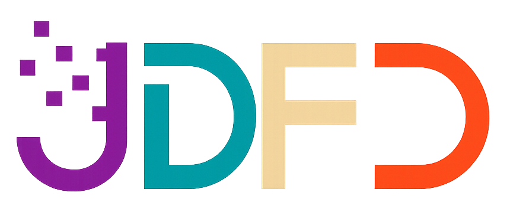

Última actualización: 21 de mayo de 2026
Condiciones de Presentación de Comunicación Breve
La Comisión Organizadora de la 1° Jornada de Diseño y Fabricación Digital (JDFD) convoca a Investigadores, docentes universitarios, terciarios, y de escuelas técnicas, profesionales, estudiantes de grado y posgrado avanzados y graduados a presentar sus trabajos bajo la modalidad de Comunicación Breve. Este espacio tiene como propósito central mapear, visibilizar y debatir en torno a las experiencias académicas, proyectos de investigación y desarrollos productivos vigentes que utilicen tecnologías digitales y modelado paramétrico.
La participación busca promover el intercambio federal e interdisciplinario, propiciando un espacio crítico donde los saberes de las tecnologías de vanguardia dialoguen con el territorio, el impacto social, la cultura maker y la matriz productiva regional.
1. Ejes Temáticos de la Convocatoria
Las propuestas presentadas son libres de temática, pero para ordenarlas, se hará en alguna de las líneas de experimentación e investigación esbozadas para esta edición de la Jornada. Los ejes comprenden el desarrollo y la innovación en:
- Modelado Paramétrico y Morfogénesis Digital: Proyectos centrados en la experimentación formal, algoritmos aplicados al diseño y optimización de estructuras complejas mediante software avanzado.
- Sistemas de Impresión 3D y Experimentación Material: Investigaciones y aplicaciones concretas en fabricación aditiva orientadas a pastas cerámicas, polímeros avanzados, biomateriales y procesos de matricería.
- Codiseño y Tecnologías Sociales: Experiencias de diseño participativo y articulación con la comunidad, vinculando la formación técnica con demandas territoriales concretas.
- Fabricación Digital e Innovación Productiva: Casos de estudio y proyectos orientados a la vinculación tecnológica con empresas, laboratorios, escuelas de oficios y sectores socioproductivos tradicionales.
- Diseño, Innovación y Fabricación Digital: Temática libre
2. Formato y Requisitos de Envío
Los postulantes deberán estructurar su Comunicación Breve garantizando un carácter descriptivo y riguroso. El documento final debe sintetizar de forma clara los objetivos del proyecto, la metodología implementada (técnica o participativa), los materiales utilizados y los resultados obtenidos o esperados.
Los trabajos deben ser enviados en formato digital editable y contemplar un resumen extendido que no supere las extensiones pautadas por el comité, acompañados por un máximo de cinco palabras clave que faciliten su indexación en las futuras memorias de la jornada. Asimismo, el objetivo de la comunicación breve es el relato desde las imagenes. La inclusión de piezas gráficas o fotografías de prototipos que den cuenta del proceso experimental.
3. Comité Editorial y Proceso de Evaluación
Todas las propuestas recibidas pasarán por un proceso de revisión y selección a cargo del Comité Académico de la Jornada, compuesto por directores y especialistas de la Licenciatura en Diseño Industrial y las áreas de investigación del Departamento de Humanidades y Artes. El comité evaluará la pertinencia del trabajo respecto a los ejes de la convocatoria, la claridad de la exposición, la rigurosidad metodológica y la originalidad del aporte dentro del campo de la fabricación aditiva y la cultura digital.
4. Publicación de Resultados y Certificación
Aquellas comunicaciones que resulten aprobadas serán notificadas formalmente a los autores y se integrarán al cronograma de exposiciones orales o pósteres digitales durante el evento. Adicionalmente, los trabajos seleccionados formarán parte del compendio de publicaciones institucionales respaldadas por el Laboratorio de Diseño (LAD) y las coordinaciones académicas de la Universidad Nacional de Lanús (UNLa), otorgándose las correspondientes certificaciones de autoría y exposición.
5. Inscripción y Envío de Propuestas
La recepción de los trabajos se gestiona de manera unificada a través de la plataforma digital oficial. Los interesados deben completar el formulario de postulación declarando los datos de los autores, filiación institucional, el eje temático seleccionado y completando el documento correspondiente para su evaluación, donde se tienen las siguientes características:
En cuanto a sus especificaciones formales, la propuesta debe presentarse en formato de documento de texto dentro del formulario de inscripción (.doc, .docx o de código abierto equivalente) e incluir de manera explícita: un título conciso y representativo, 45 caracteres como máximo, y subtitulo si asi lo desea. los datos completos de los autores junto a su pertenencia institucional, mail, orcid si tiene, y un resumen extendido con una extensión sugerida de entre 100 palabras estructurado en cualquier tipografía. Se exige adjuntar un máximo de cinco palabras clave en minúsculas, y se habilita la incorporación de tablas, gráficos o registros fotográficos integrados directamente en el cuerpo del formulario siempre que cuenten con sus correspondientes epígrafes explicativos. Las imagenes deben ser todas del mismo tamaño, con un máximo de 1200 píxeles de ancho y una resolución mínima de 300 ppp. la cantidad de imagenes es 2 o 3 o 4 o 6 o 8 o 12 o 15 o 18 o 20. Se recomienda que el documento no supere las 1000 palabras, aunque no se establece un límite estricto.
6. Contacto y Consultas
Para la resolución de dudas técnicas sobre las pautas de formato, problemas con la carga del formulario o consultas generales sobre los alcances de la convocatoria, se pone a disposición el correo electrónico oficial del evento: jornadadedisenoyfabricaciondigital@gmail.com.